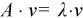

Intel® oneAPI Math Kernel Library Developer Reference - Fortran
Computes for an n-by-n real/complex non-symmetric matrix A, the eigenvalues and, optionally, the left and/or right eigenvectors.
call psgeevx(balanc, jobvl, jobvr, sense, n, a, desca, wr, wi, vl, descvl, vr, descvr, ilo, ihi, scale, abnrm, rconde, rcondv, work, lwork, info)
call pdgeevx(balanc, jobvl, jobvr, sense, n, a, desca, wr, wi, vl, descvl, vr, descvr, ilo, ihi, scale, abnrm, rconde, rcondv, work, lwork, info)
call pcgeevx(balanc, jobvl, jobvr, sense, n, a, desca, w, vl, descvl, vr, descvr, ilo, ihi, scale, abnrm, rconde, rcondv, work, lwork, info)
call pzgeevx(balanc, jobvl, jobvr, sense, n, a, desca, w, vl, descvl, vr, descvr, ilo, ihi, scale, abnrm, rconde, rcondv, work, lwork, info)
The p?geevx routine computes for an n-by-n real/complex non-symmetric matrix A, the eigenvalues and, optionally, the left and/or right eigenvectors.
Optionally also, it computes a balancing transformation to improve the conditioning of the eigenvalues and eigenvectors (ilo, ihi, scale, and abnrm), reciprocal condition numbers for the eigenvalues (rconde).
The right eigenvector v of A satisfies

where ƛ is its eigenvalue.
The left eigenvector u of A satisfies.
uHA = ƛuH
where uH denotes the conjugate transpose of u. The computed eigenvectors are normalized to have Euclidean norm equal to 1 and largest component real.
Balancing a matrix means permuting the rows and columns to make it more nearly upper triangular, and applying a diagonal similarity transformation D*A*inv(D), where D is a diagonal matrix, to make its rows and columns closer in norm and the condition number of its eigenvalues smaller. The computed reciprocal condition numbers correspond to the balanced matrix. Permuting rows and columns will not change the condition numbers in exact arithmetic, but diagonal scaling will.
The current version doesn’t support computation of the reciprocal condition numbers for the right eigenvectors.
All the p?geevx interfaces call p?lahqr for computing eigenvalues and eigenvectors of the Hessenberg matrices. There are several restrictions for the usage of p?lahqr, which include:
The current implementation of p?lahqr requires the distributed block size to be square and at least six (6); unlike simpler codes like LU, this algorithm is extremely sensitive to block size.
The current implementation of p?lahqr requires that input matrix A, the left and right eigenvector matrices VR and/or VL to be distributed identically and have identical context.
(global). Must be 'N', 'P', 'S', or 'B'. Indicates how the input matrix should be diagonally scaled and/or permuted to improve the conditioning of its eigenvalues.
If balanc = 'N', do not diagonally scale or permute;
If balanc = 'P', perform permutations to make the matrix more nearly upper triangular. Do not diagonally scale;
If balanc = 'S', diagonally scale the matrix, that is, replace A by D*A*inv(D), where D is a diagonal matrix chosen to make the rows and columns of A more equal in norm. Do not permute;
If balanc = 'B', both diagonally scale and permute A.
Computed reciprocal condition numbers will be for the matrix after balancing and/or permuting. Permuting does not change condition numbers (in exact arithmetic), but balancing does.
(global). Must be 'N' or 'V.
If jobvl = 'N', left eigenvectors of A are not computed;
If jobvl = 'V', left eigenvectors of A are computed.
If sense = 'E', then jobvl must be 'V'.
(global). Must be 'N' or 'V.
If jobvr = 'N', right eigenvectors of A are not computed;
If jobvr = 'V', right eigenvectors of A are computed.
If sense = 'E', then jobvr must be 'V'.
(global). Must be 'N' or 'E. Determines which reciprocal condition numbers are computed.
If sense = 'N', none are computed.
If sense = 'E', computed for eigenvalues only.
(global) The order of the distributed matrix A (n≥0).
(local)
Pointer into the local memory to an array of size lld_a*LOCc(n). On entry, this array contains the local pieces of the n-by-n general distributed matrix A to be reduced.
(global and local) array of size dlen_. The array descriptor for the distributed matrix A.
(global output) Arrays, size at least max (1, n) each. Contain the real and imaginary parts, respectively, of the computed eigenvalues. Complex conjugate pairs of eigenvalues appear consecutively with the eigenvalue having positive imaginary part first.
(global output) Array, size at least max(1, n). Contains the computed eigenvalues.
(local output)
Pointer into the local memory to an array of size (DESCVL(LLD_),LOCc(n)).
If jobvl = 'N', vl is not referenced. If jobvl = 'V', the vl parameter contains the local pieces of the left eigenvectors of the matrix A.
(global and local input) array of size dlen_. The array descriptor for the distributed matrix vl.
(local output)
Pointer into the local memory to an array of size (DESCVR(LLD_),LOCc(n)).
If jobvr = 'N', vr is not referenced. If jobvr = 'V', the vr parameter contains the local pieces of the right eigenvectors of the matrix A.
(global and local input) array of size dlen_. The array descriptor for the distributed matrix vr.
(global output)
ilo and ihi are integer values determined when A was balanced.
The balanced A(i,j) = 0 if i > j and j = 1,..., ilo-1 or i= ihi+1,..., n.
If balanc = 'N' or 'S', ilo = 1 and ihi = n.
(global output)
Array, size at least max(1, n). Details of the permutations and scaling factors applied when balancing A.
If P[j - 1] is the index of the row and column interchanged with row and column j, and D[j - 1] is the scaling factor applied to row and column j, then
scale[j - 1] = P[j - 1], for j = 1,...,ilo-1
= D[j - 1], for j = ilo,...,ihi
= P[j - 1] for j = ihi+1,..., n.
The order in which the interchanges are made is n to ihi+1, then 1 to ilo-1.
The one-norm of the balanced matrix (the maximum of the sum of absolute values of elements of any column).
Array, size at least max(1, n).
rconde[j - 1] is the reciprocal condition number of the j-th eigenvalue.
Not supported in the current version. It could be null pointer.
(local)
Workspace array of size lwork.
(local or global) size of the array work.
If lwork = -1, then lwork is global input and a workspace query is assumed; the function only calculates the minimum size for the work array. These values are returned in the first entry of the work array, and no error message is issued by pxerbla.
(global)
= 0: the execution is successful.
< 0: if the i-th argument is an array and the j-th entry, indexed j- 1, had an illegal value, then info = -(i*100+j); if the i-th argument is a scalar and had an illegal value, then info = -i.